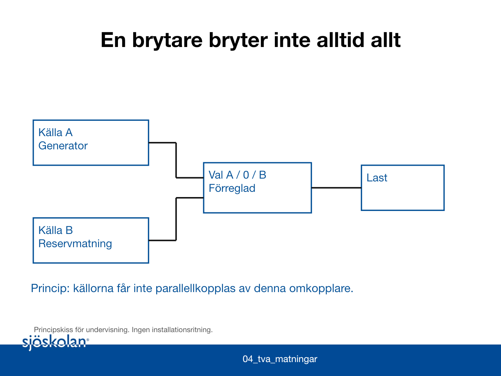

Vecka 40 · måndag 28 september
Elevuppgifter: Frånskiljning och mätteknik
Arbeta på distans med underlagen nedan. Gör inga elektriska mätningar hemma. Praktiska mätningar sker vid det handledda labbtillfället.
Figurer · Formelblad och begrepp · Underlagskort · Protokollmallar
Övning 1.1: Två matningar

Underlag: Använd figur 04. Källa A är ordinarie och B är reserv. A:s brytare är öppen. Väljarens verkliga ställning och spärrstatus är okända.
Uppgift: Ange varför A:s öppna brytare inte räcker som säkerhetsbevis. Skriv ett underlagskrav och en verifieringsfråga.
Lämna: egen lösning med metod och motivering.
Övning 1.2: Instrumentval
Instrumentkort M1
Digital DC-voltmeter
| Mätning | Finns | Mätområde |
|---|---|---|
| DC-spänning V⎓ | ✓ Ja | 0–20 V |
| AC-spänning V~ | ✗ Nej | – |
| Likström A⎓ | ✗ Nej | – |
| Växelström A~ | ✗ Nej | – |
| Resistans Ω | ✗ Nej | – |
| Upplösning | 0,01 V |
|---|---|
| Felgräns | ±(0,5 % av visat värde + 2 siffror) |
| Ingångsresistans | 10 MΩ |
| Används till | Kretsar med högst 20 V DC. Inte nätspänning. |
Konstruerat utbildningsunderlag, inte en produktmanual.
Instrumentkort M2
Digital multimeter, true RMS
| Mätning | Finns | Mätområde |
|---|---|---|
| DC-spänning V⎓ | ✓ Ja | 0–600 V |
| AC-spänning V~ | ✓ Ja | 0–600 V, true RMS, 40–400 Hz |
| Likström A⎓ | ✓ Ja | 0–200 mA, säkrad mA-ingång |
| Växelström A~ | ✗ Nej | – |
| Resistans Ω | ✓ Ja | 0–20 MΩ, bara på spänningslöst, avgränsat objekt |
| Mätkategori | CAT III 600 V |
|---|---|
| mA-ingång | Säkring 200 mA. Kopplas i serie med kretsen. |
| Används till | Följ också instrumentets övriga villkor och stationens instruktion. |
Konstruerat utbildningsunderlag, inte en produktmanual.
Underlag: Använd instrumentkorten M1 och M2. Tabellen Vad instrumentet kan mäta visar vilka mätningar varje instrument klarar (Ja) och inte klarar (Nej).
Uppgift: Välj instrument/funktion för 12 V DC, 12 V AC vid 50 Hz, cirka 4 mA DC och ett löst 1 kΩ-motstånd. Beskriv anslutning.
Lämna: egen lösning med metod och motivering.
Övning 1.3: Osäkerhet
Underlag: Ett konstruerat instrument visar 12,00 V. Specifikation: ±(0,5 % av visat värde + 2 siffror). Upplösning 0,01 V.
Uppgift: Beräkna gränsen enligt denna specifikation. Bedöm om 12,04 V avviker säkert från ett referensvärde 12,00 V om övriga osäkerheter försummas.
Lämna: egen lösning med metod och motivering.
Övning 1.4: Högspänningsfall på skärm
Underlag: Ett 6,6 kV-ställverk har två möjliga matningar och energilagrande komponenter. Inget fastställt arbetsområde eller kopplingsprogram är tillgängligt.
Uppgift: Beskriv vilka uppgifter/roller som behöver finnas. Gör inga förslag på manöverordning eller generella säkerhetsavstånd.
Lämna: egen lösning med metod och motivering.